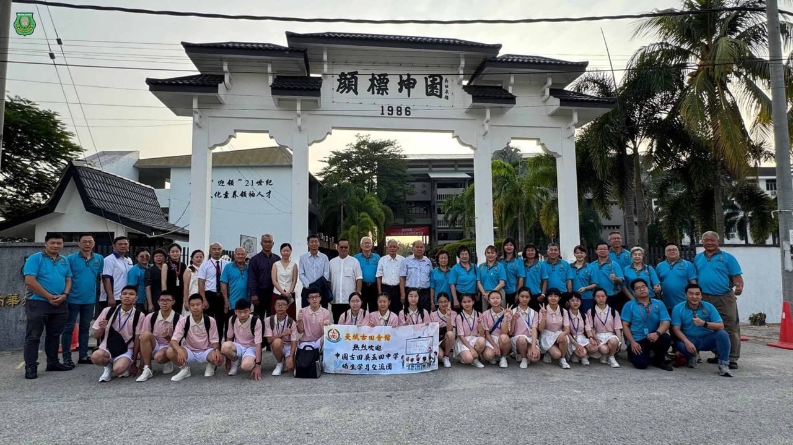
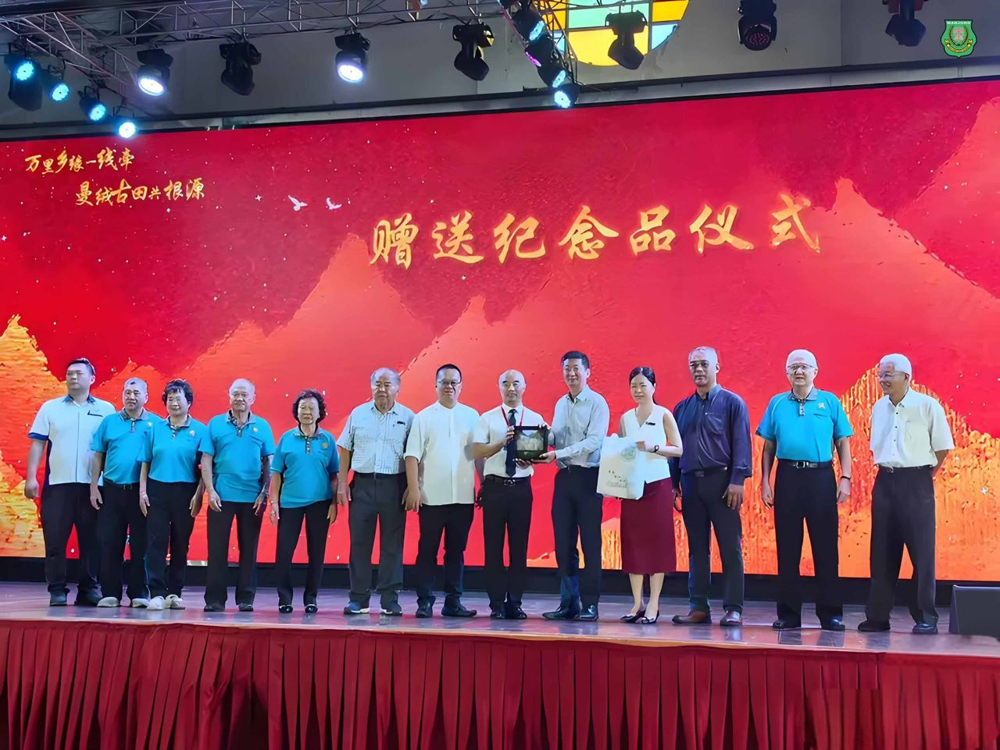
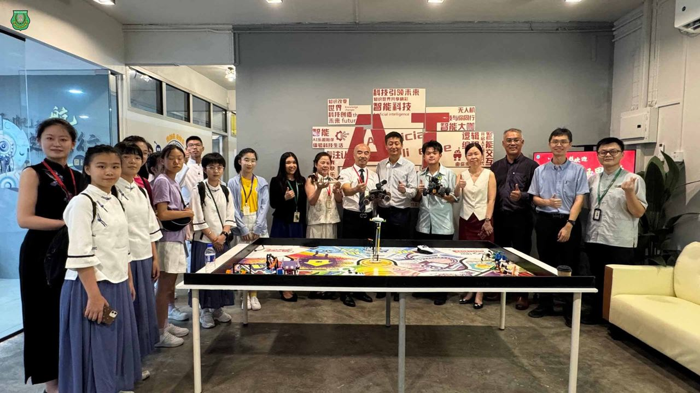
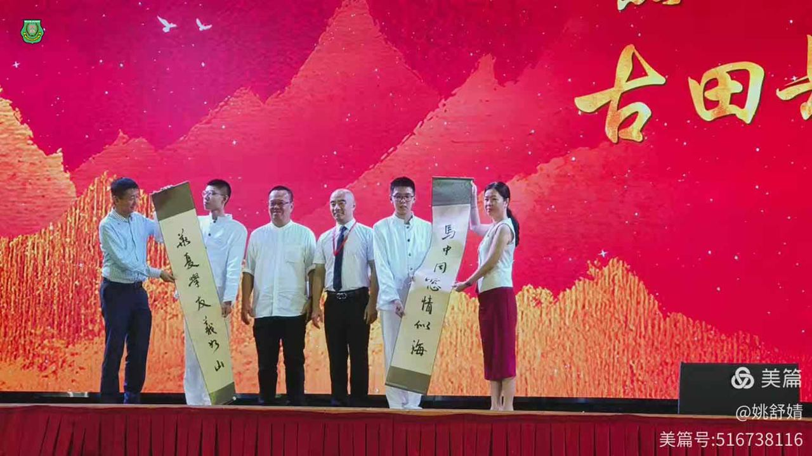
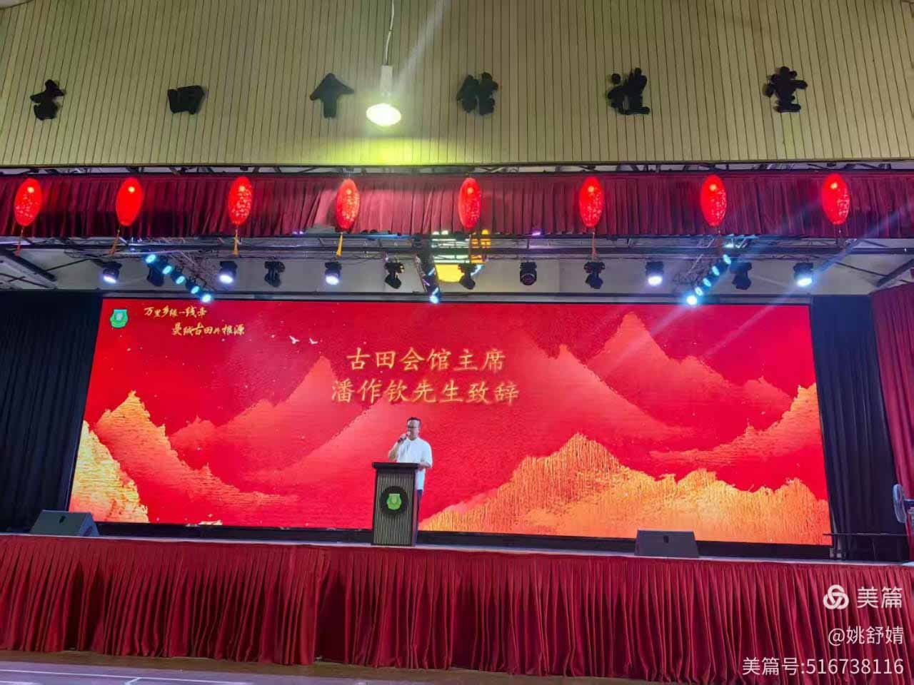
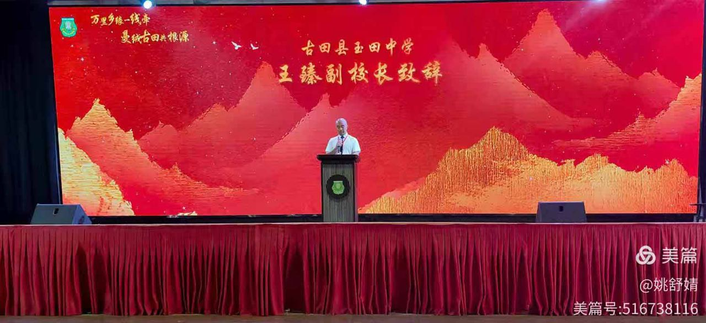
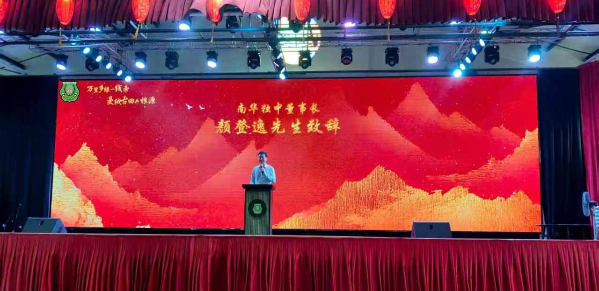
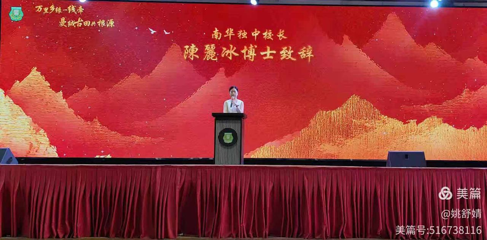

中国古田县玉田中学师生莅校
中国古田县玉田中学师生莅校
南华独中喜迎姐妹情
2025年8月1日，一场跨越国界的教育交流在南华独中激荡起千层火花。南华独中迎来了来自中国福建省古田县玉田中学的小暑队师生代表团以及古田会馆一众代表，展开一整天紧凑而充实的文化、学术与生活课程体验交流，在“血脉相连”的姐妹情谊中，续写中马教育互鉴的新篇章。
#鼓声迎宾，#文化共鸣
活动自一早便洋溢着热烈氛围。上午7时30分，南华独中龙狮团与二十四节令鼓团列队校门，擂响迎宾之鼓。《鼓动八方》节令鼓曲以“春耕、夏耘、秋收、冬藏”为主轴，配合阵阵锣鼓与昂扬气势，迎接远道而来的贵宾。玉田师生感叹道：“听起来那么熟悉和慰藉人心”，在击鼓间仿佛听见传统的共鸣，见证文化血脉的传承与连接。
#礼堂致辞，#礼敬情深
欢迎仪式于古田会馆礼堂隆重举行。南华独中董事长颜登逸先生、校长陈丽冰博士、古田会馆馆长潘作钦先生以及玉田中学副校长王臻先生分别致辞，表达双方对彼此教育理念的认同、对同宗文化的感怀，也肯定姊妹校长期以来的互动基础与未来的合作期许。随后互赠纪念品，将这一段记忆具象留存，让友谊在时光中延续生温。
#文艺交流， #青春交响
南华独中透过管乐、舞蹈、华乐与英语配音，呈现出融合传统与现代、多元文化共融的本土气质，彰显学生自信朝气与团队合作精神。玉田中学则以舞蹈、独唱、唱跳及书法朗诵等节目，展现师生饱满的精神风貌与浓厚的中华底蕴，传递出对文化传承的热忱与教育初心。双方以艺会友，在掌声与共鸣中，彼此欣赏、彼此启发。
#教学参观，#理念共振
玉田中学代表团王臻副校长带领其教师团与南华独中董事与行政层，在古田会馆的见证下，针对双方教育理念与办学愿景进行学术交流与互动。与此同时，玉田中学的学生们则是进行沉浸式体验课，其中包括有柯家浚老师主讲物理实验；林子策老师以AI技术辅助学习华文课程；林继汉老师引领的学生则负责AI与编程课程，在创客空间中感受科技的力量。
#选修体验， #课程多元
玉田师生分别参与了南华独中特色选修课程，包括美甲、美容彩妆、插花、小厨艺、咖啡与甜点制作、大众传播、中华文化、绘画拓印等，在实践中学习、在体验中成长。学生们纷纷表示，这种动静结合、文理并重的教学形式极具吸引力，不仅提升了能力，也打开了多元学习玉田师生分别参与了南华独中特色选修课程，包括美甲、美容彩妆、插花、小厨艺、咖啡与甜点制作、大众传播、中华文化、绘画拓印等，在实践中学习、在体验中成长。学生们纷纷表示，这种动静结合、文理并重的教学形式极具吸引力，不仅提升了能力，也打开了多元学习视野。







